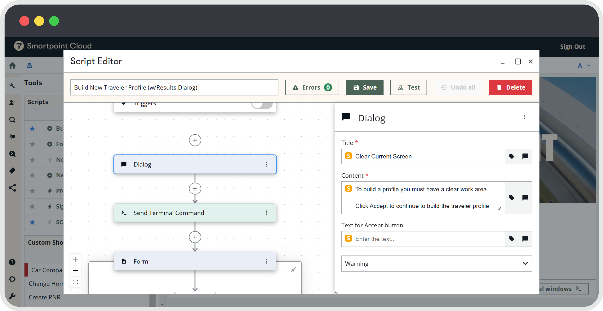
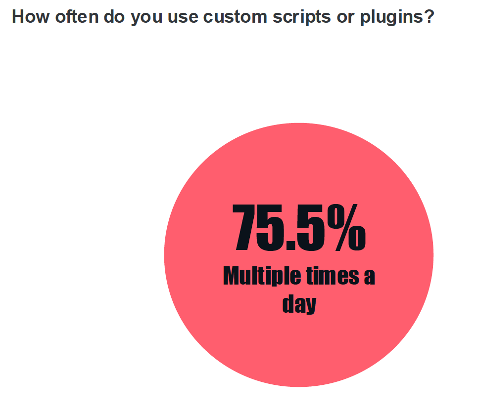
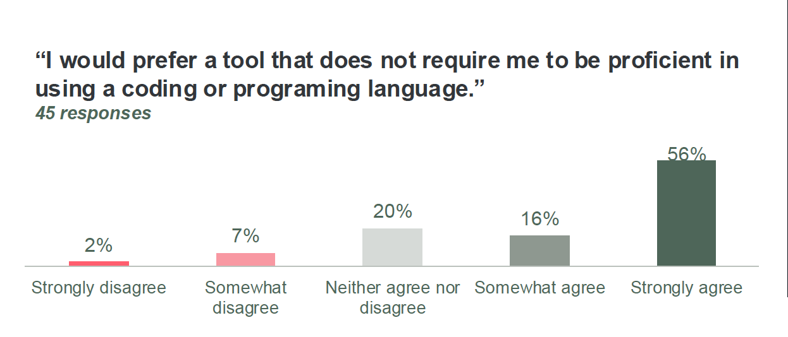
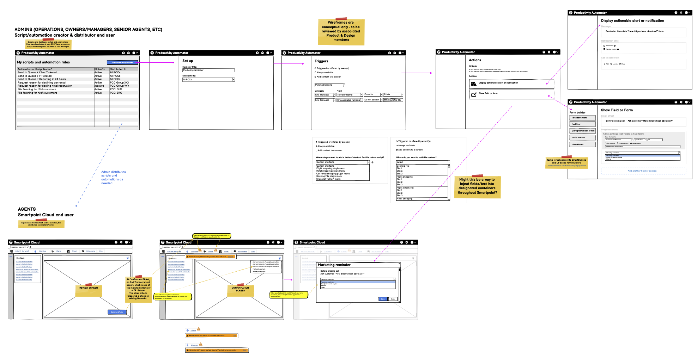
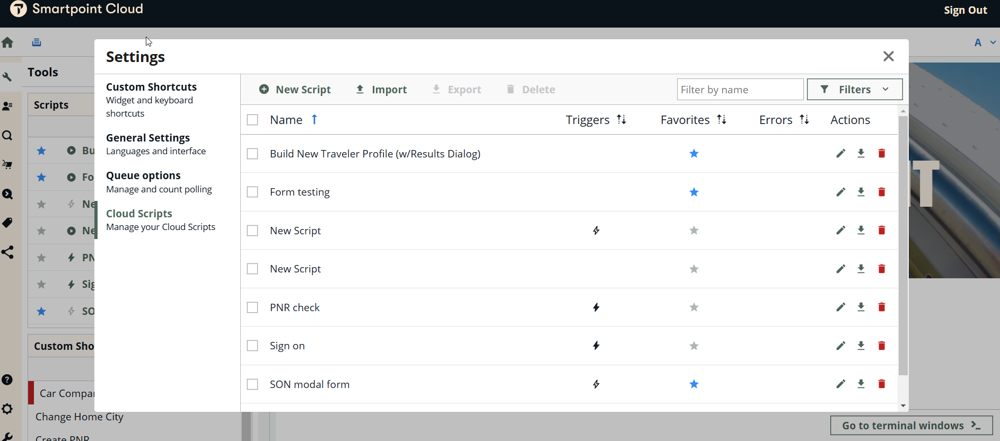

Case study
Cloud Scripts
A low-code automation tool that replaced a legacy scripting system agencies couldn't maintain — and one of the deciding factors in over 100 agencies adopting the wider platform.

The situation
Users were migrating to a new platform, but their automation tools weren't coming with them.
Agencies had spent years building "scripts" in our legacy desktop tool to automate repetitive tasks — ticketing, refunds, prompts, custom workflows. The tools were painful: steep learning curve, hard to maintain, next to impossible to share between team members. But they were also load-bearing. When we planned the move to our new cloud platform, we assumed its built-in features would cover what those scripts did.
They didn't. Research told us that fast, and it told us why.
Research
What automation actually meant to the people using it
We ran a survey of 100+ users already relying on legacy automation, paired with six in-depth interviews (45–60 minutes each) with the people who actually built and maintained scripts for their teams, plus a teardown of existing tools against modern alternatives.
Three-quarters of respondents used some form of automation multiple times a day — mostly to save time on repetitive tasks, standardize error-prone processes like ticketing and refunds, and inject custom content the platform didn't natively support. But almost nobody wanted to build a script from scratch. Most people were editing existing ones and hoping for the best.

75.5% of respondents used custom scripts or plugins multiple times a day.

56% strongly agreed they'd prefer a tool that didn't require coding proficiency (45 responses).
That single line reframed the brief. The legacy tool required users to write raw XML by hand, with a few "helper" buttons that only partially bridged the gap. The real pain point wasn't automation itself — it was that building automation required knowing a coding language nobody had signed up to learn.
Who we were designing for
Three groups, two of them our real audience
We mapped existing personas onto three functional groups. Users run scripts without ever building one — often without realizing automation is even involved. Creators build and maintain scripts for themselves or their team, with enough technical fluency to handle complex bookings. Admins do everything a Creator does, plus manage distribution and standardization across a whole agency.
Design effort went almost entirely toward Creators and Admins — they're the ones who'd actually touch the editor. Users just needed the output to keep working invisibly, the way it always had.
Designing the editor
An infinite canvas, not a form
The core design decision was moving away from a linear, XML-driven editor toward a visual, infinite-canvas builder where each automation step is its own expandable block. Because the tool's logic was too complex to validate safely in a static prototype, we made an early call to build and ship a live proof-of-concept rather than test mockups — internal teams and customer-facing staff used the real thing and reported back.

Early conceptual wireframes mapping the admin (script creator) and agent (end user) flows.
Testing & iteration
What a one-hour moderated test surfaced
We ran task-based moderated testing with a mix of novice and experienced users. Most completed their tasks fine — but a handful of usability problems were consistent enough to fix before the next release:
Getting lost in long scripts
Solved with a zoomable, collapsible canvas so users could move between overview and detail without losing their place.
Errors were hard to find
Added an error panel that lists every issue with a direct link to jump to it in the script.
Steps crowded the canvas
Moved the step-builder out of the flow and into a side panel, cutting clutter from the main view.
No recovery for deleted work
Introduced a "deleted scripts" page and a clear marker for unsaved changes.
We also added an advanced settings area for admin-level script management, since nothing like it had existed before.

The advanced settings area for admin-level script management.
Design systems
Building components once, for everyone
Cloud Scripts needed several UI patterns that didn't exist yet — a step header, a compact "add step" control, a draggable step block. Rather than maintain custom components outside our design system and let them drift out of sync, I worked with the design systems team to get them added properly: the step header, the rounded add-step button, and the draggable step block all shipped into the shared library for other teams to use.

Step block states, colors, and drag-and-drop behavior, documented for the shared design system.
Outcome
Adoption followed, and it kept the platform's biggest deals alive
Feedback since launch has been consistently positive — people report real time savings and an easier experience than the legacy tools. More concretely, automation support became a deciding factor for over 100 agencies choosing to adopt the wider platform, and it played a direct role in closing several major accounts where automation was a hard requirement.
The two things I'd point to as decisive: shipping a live proof-of-concept instead of testing a static prototype, which let us surface real problems fast on a tool too complex to fake convincingly — and treating the design-system work as part of the deliverable, not an afterthought, which meant the team could keep building without re-litigating every UI decision.
What's next
Open problems we're still working through
- Finding variables. The list of variables users can reference is long and inconsistently named. We're designing a smart search that matches synonyms — searching "passenger" also finds "traveler" or "person."
- Sharing at scale. Right now, sharing a script means exporting a JSON file. Larger agencies want centralized distribution, which means a proper sharing panel for admins.
- More triggers. Scripts can currently only fire from clicks or terminal activity. Broader trigger support is next.
- Agentic script building. Early discovery was underway on letting users describe what they want in plain language and have the tool generate the script, rather than building it step by step.